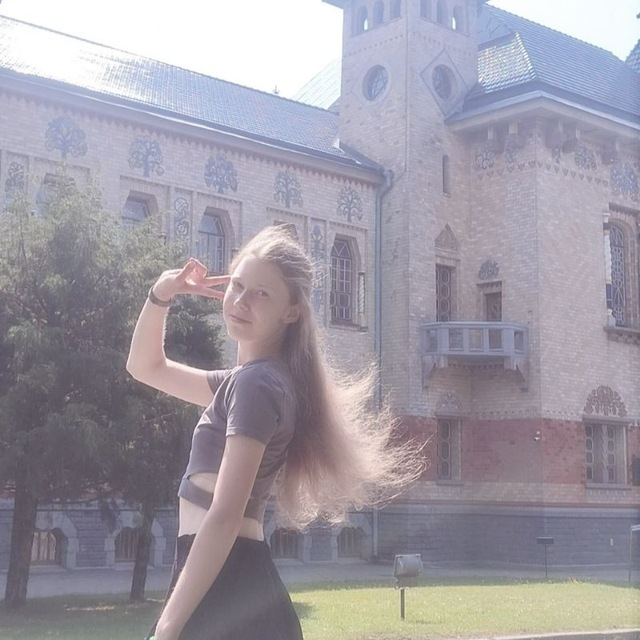

З нашою річницею,
Діанко
Пам'ятаю 21 липня, коли ми вперше побачили одне одного, і 1 жовтня, коли зрозуміли, що далі тільки разом. Кожен день поруч із тобою — це справжнє, щире щастя.
Ти робиш моє життя яскравішим

Ти найзатишніше і найтепліше місце на землі, я обожнюю твою посмішку, кожен твій погляд і тебе всю.
Твій щирий сміх
Обожнюю, коли ти смієшся від душі навіть з мого найбезглуздішого та найтупішого жарту. Твій сміх миттєво піднімає мій настрій.
Твоя простота і справжність
Ти вмієш бути собою в будь-якій ситуації. З тобою не треба нічого вигадувати — просто бути поруч.
Ти — мій затишок
Обожнюю кожну твою милу дрібничку: коли ти просто так погладиш мене, ніжно цьомнеш або пригорнешся. У таких простих речах для мене весь кайф і тепло.
Твоя підтримка
Ти завжди вмієш вислухати, обійняти (навіть ментально) і сказати саме ті слова, які мені потрібні.
Як усе починалося
Важливі дати, які змінили все
Наше перше знайомство
Ніколи не подумав би, що в боті для знайомств може бути хтось, як ти.. Наше знайомство вже з перших секунд змусило мене повірити в чудо
Перший кружечок
Кіткат перший вийшов на розвідку, потрапивши у кадри кружечка. Досихпір пам'ятаю, як здивувався плашці "Записує відео" :)
Перший кружечок з лицем
Бажання довести, що ти не скуф, було вище за всю сором'язливість, уявляю, як довго ти підбирала ракурс, щоб просто довести мені що ти справжня)
Найвигідніша економічна угода
Хто знав, що в той день я куплю тебе за 5 каштанів майже в буквальному сенсі.. А я їх збирав просто щоб чимось розбавити нашу прогулянку
Ми нарешті разом! ❤️
Карич поклав початок нашим стосункам! Хоча, якби я думав трішки менше, і не переживав чи точно все вірно почув - це могло статися на день раніше
Вперше за ручки
Як же довго я наважувався, і яким же щасливим я був, коли ти не вивернула мені руку зі словами "фу") Жартую, я знав, що ти цього хочеш🤫
Перше спільне кіно («Батьківські збори»)
Тоді я ще не знав, що підлокітники піднімаються, але це не завадило нам весело провести час
Перший поцілунок
Скромний, не сильно романтичний, дитячий, але який є :< Я й досі соромлюсь робити францу.. Кхм-кхм
Рятівний пакет
Твій новорічний подарунок, твоя листівка, яка подарувала мені скільки емоцій (мені ніхто нічого подібного ніколи не дарував і моє майже падіння, яке було врятоване твоїм пакетом
Друге кіно: «Потяг до Різдва»
День, коли я отримав владу, яка і не снилась моєму тату. Пам'ятаю, як боявся переборщити, і все таки переборщив. А зараз навіть страху немає)
А за ним ще — «Потяг Червона рута»
А потім - «Родичі»
Наша історія продовжується... ♾️
Кожен наступний день поруч із тобою — це найкраще продовження нашої історії. Попереду ще безліч спільних відкриттів та щасливих моментів!
Люблю чи не люблю? 🌸
Чи кохає Влад свою дівчинку?
Натискай кнопку нижче, щоб дізнатися, що каже твій Бабак:
Дінозавик біжить до Бабачка 🦖❤️
Збирай каву, круасани та сердечка, перестрибуй перешкоди! Керування: Пробіл або клік
Діанко, ти будеш зі мною назавжди? 💍
Твоя чесна відповідь: